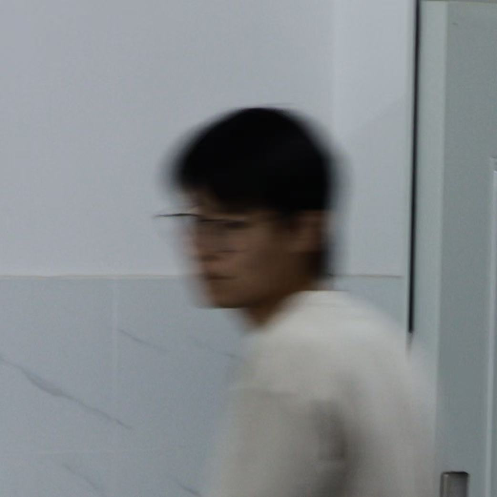

來自澳門，中國人，在公元2006年登入地球網絡。
智人，男性（XY 性染色體），一個能將咖啡因轉化為數學垃圾的有機體，目前是不可知論者。說粤語、普通話、和英文。
浙江大學，數學科學學院，數學與應用數學的一個大三學生。住在澳門，目前長時間在浙江杭州。
最愛數學，對歷史、天文學、社會人文等領域也有興趣。打籃球，有時健身，會citywalk和cityride。
對數學裏的拓撲比較有興趣（其實懂的不多）。Heine-Borel算是我最愛的數學定理，看上去就很高大上：
「歐氏空間中的集合是緊集當且僅當是有界且閉的。」
另外，其實url中少了個字母"w"，單純是手快打漏了。